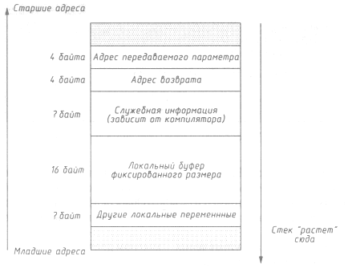
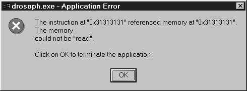

АТАКА НА INTERNET
Примерно в это же время хакерами был придуман способ передачи управления чужеродному коду, не только ставший классическим, но и по сей день являющийся основным методом эксплуатации многих уязвимостей как удаленно, так и локально. Он с успехом применялся и применяется в большинстве операционных систем. Первое нашумевшее его применение было в вирусе Морриса (см. раздел "Червь"), хотя наверняка и до этого способ открывался и переоткрывался (а может быть, и использовался) несколько раз.
Итак, одной из основных проблем, стоящей перед кракером, является необходимость исполнения написанного им (то есть вредного) кода на машине, которую он атакует. Иначе говоря, он должен указать компьютеру, с какого адреса размещается этот код, то есть занести в указатель команд (обычно он называется instruction pointer - IP) нужный ему адрес. Это, безусловно, может быть сделано штатными средствами операционной системы - путем запуска соответствующей программы. Но тут у кракера возникает две проблемы:
- У него может не быть доступа на атакуемый компьютер, то есть возможности исполнения программ.
- Даже если доступ (login) у него есть, то привилегий, данных ему, может оказаться недостаточно для выполнения некоторых функций того вредного кода, который он написал. Обычная цель кракера- получить полный контроль над машиной, что ему, естественно, просто так никто не даст.
Для решения этих проблем приходит в голову следующее: передать некоторому привилегированному процессу такие данные, которые интерпретировались бы им как код. При этом отсутствие доступа на компьютер решается передачей удаленных данных через демоны (сценарий 1 - любой пользователь Internet имеет такую возможность). Для выбора локальных привилегированных процессов (то есть при наличии доступа) также хорошо подходят демоны, если они запущены от имени суперпользователя или SUID root-программы (сценарий 3).
Итак, задача кракера уточнилась: ему необходима привилегированная программа, которая получает какие-то входные данные от непривилегированных пользователей. И дело за малым - осталось заставить программу исполнить эти данные как код. Как следует из названия раздела, такой прием получил название buffer overflow (в переводе "переполнение буфера", хотя более точно сказать "переполнение буфера в стеке").
Рассмотрим его. Весьма часто в процедурах программист отводит для своих нужд некоторый локальный буфер, имеющий фиксированный размер. Этот размер обычно устанавливается исходя из здравого (или не очень здравого) смысла. Например, если читается строка с экрана, то программист может ограничить размер буфера 80 символами, имя файла на NTFS не должно содержать более 255 символов - именно такой буфер может быть отведен в этом случае и т. п.
Мы предположим, что программа получает некоторые данные извне. Пусть буфер необходим программисту для обработки этих данных. Тогда мы получим примерно следующий фрагмент кода:
process_data (char *data)
{
...
char buf[FIXED];
strcpy (buf, data);
<необходимая обработка данных в буфере>
return;
}
Подробно на причинах появления такого кода мы остановились, чтобы показать, что он является весьма типичным и распространенным (пусть и не очень хорошим с точки зрения стиля) для любых приложений, а вовсе не надуманным примером. Именно поэтому ошибки переполнения буфера так часто и проявляются.
Дальнейшее уже почти ясно. Локальные переменные (к которым относится и наш буфер) обычно располагаются компилятором в стеке, куда чуть раньше им же помещается адрес возврата в процедуру, из которой была вызвана process_data(). При часто используемой реализации стека, когда он "растет" вниз, оказывается, что адрес возврата в процедуру находится "дальше" (то есть имеет в стеке больший адрес), чем локальный буфер.
Возьмем, например, программу-дрозофилу:
main(int argc, char *argv[] )
{
process_data(argv[1]):
}
#define FIXED 16
process_data (char *data)
{
char buf[FIXED];
strcpy (buf, data);
return;
}
Для нее стек после вызова process_data() будет выглядеть примерно так, как это показано на рис. 9.1.

Рис. 9.1. Состояние стека после вызова уязвимой функции
Теперь уже не надо быть суперхакером, чтобы заметить, что адрес возврата находится не только в одном сегменте с локальными переменными, но и имеет больший адрес. Тогда, передав в качестве данных строку, имеющую заведомо больший размер, чем у отведенного под ее обработку буфера, мы сможем затереть все, что лежит в памяти выше, чем этот буфер, так как функция strcpy() будет копировать данные до тех пор, пока не встретит нуль-символ '\0'. В нашем примере достаточно передать как входной параметр строку длиной более 15 байт для выхода за границу буфера плюс еще несколько байт для изменения собственно адреса возврата.
Не случайно в приведенных выше рассуждениях ни разу не встретилось упоминания о конкретной операционной системе. Действительно, технология переполнения локального буфера весьма универсальна и будет работать практически в любой ОС (об ограничениях чуть ниже), поэтому читатель может скомпилировать программу-дрозофилу в его любимой ОС и посмотреть на результат, подав на вход, скажем, строку из 30 единиц (этого должно быть достаточно для любой ОС и любого компилятора). UNIX-системы при этом выведут что-то типа "Segmentation fault, core dumped". Информация от Windows NT (рис. 9.2) для хакера более наглядна - по ней сразу понятно, что произошло именно переполнение буфера с возможностью подмены адреса возврата, так как адрес, на котором "споткнулась" программа, был не чем иным, как 0х31313131. Это соответствует шестнадцатеричному коду для строки из четырех единиц. Если ввести строку, состоящую из неодинаковых символов, например 01234567890abcdefghijklmnopqst, то по выведенному адресу станет ясно, в каком месте строки должен стоять будущий адрес возврата.

Рис. 9.2. Информация о сбое программы в Windows NT
Итак, цель - передача управления - хакером достигнута. Теперь дело за малым. Нужно выполнить следующие шаги:
- Найти подходящую программу, которая не только содержит процедуру, похожую на process_data(), но и выполняется с большими привилегиями. Если хакеру доступны исходные тексты, то особое внимание надо обратить на программы, содержащие функции strcat(), strcpy(), sprintf(), vsprintf(), gets(), scanf() и т. п. Если исходных текстов нет, то остается ручной (или автоматизированный) поиск уязвимых программ, то есть подача на вход длинных строк и оценка результатов.
- Определить для найденной программы, какой размер буфера надо использовать, где в буфере должен располагаться адрес возврата и т.п.
- Написать код, на который осуществится переход. Для ОС UNIX стандартный вариант - вызов оболочки следующим образом:
char *name[2]; name[0] = "/bin/sh"; name[1] = NULL; execve(name[0], name, NULL):Для Windows NT это сделать сложнее.
- Каким-то образом внедрить свой код в систему (хороший вариант - расположить его все в той же строчке). При этом злоумышленнику надо проверить, чтобы вызываемая функция при обработке этой строки не испортила данный код. Другая проблема - если process_data() использует strcpy() или любые другие стандартные функции работы со строками, то код должен быть написан так, чтобы он не содержал нулей, потому что в противном случае его копирование остановится на первом нуле. Заметьте, что код вызова оболочки уже содержит, по крайней мере, три нуля: один в конце "/bin/sh" и два NULL. Возможен вариант, когда не обойтись без нулей (например, сам адрес возврата должен их содержать), тогда можно, например, зашифровать код так, чтобы нули исчезли, а затем в начале кода использовать его расшифровщик.
В 1990 и 1995 годах Кристофером Клаусом (Christopher Klaus) [26] было протестировано около 80 программ на 9 различных платформах. Специальная программа подавала на вход строки длиной до 100 000 символов. В результате 25-33% программ в 1990 году и 18-23% в 1995 году работали некорректно - зависали, сбрасывали аварийный дамп и т.п. Интересно, что в коммерческих версиях UNIX этот процент доходил до 43, тогда как в свободно распространяемых он был меньше 10. Впрочем, справедливости ради надо отметить, что только две программы-демона вели себя таким образом в 1990 году, а через 5 лет эти ошибки были исправлены.
На практике, когда мы занимались анализом безопасности одного из шифраторов IP-трафика, построенного на базе ОС FreeBSD 2.2, нам потребовалось совсем немного времени, чтобы найти типичную ошибку переполнения буфера в SUID root-программе suidperl. Получить полномочия суперпользователя удалось передачей в качестве параметра строки из 1 197 байт, содержащей стандартный код вызова оболочки.
Также важно отметить, что технология переполнения буфера, являясь самой распространенной и эффективной для удаленного исполнения кода, то есть для реализации опасных угроз раскрытия и целостности, но требующая значительных усилий по формированию соответствующей строки, может применяться очень эффективно и для атак "отказ в обслуживании". Здесь нет необходимости специально подбирать буфер с правильным адресом возврата, а подойдет любой, и возврат совершится на некий случайный адрес, вызвав тем самым аварийный останов программы или всей ОС в целом. Для реализации таких атак необходимо подобрать только длину буфера, но вполне естественно, что хорошими кандидатами будут строки длиной на 10-20 байт больше, чем 80, 100, 128, 256, 512, 1 000, 1 024, 2 048.
| Для гарантированного отказа в обслуживании недостаточно подать на вход очень длинную строку, тем самым переполнив любой из потенциальных буферов. Дело в том, что начиная с некоторой длины такие строки могут не вызывать необходимого переполнения буфера, а приводить к другим ошибкам и иногда вообще никак не проявляться в работе программы. Иначе говоря, хакер, готовя переполнение буфера, ограничен максимальным размером кода, который он сможет выполнить. Тем не менее разумно подбирать длину буфера, начиная с больших величин. |
Осталось подытожить, какие операционные системы могут подвергаться технологии переполнения буфера. Явно или неявно, но мы предполагали, что:
- параметры функций передаются через стек;
- адрес возврата также помещается в стек;
- локальные переменные располагаются в стеке;
- стек "растет" вниз;
- данные в стеке могут интерпретироваться как команды;
- должны существовать процессы или программы, имеющие уязвимый код, подобный функции process_data();
- некоторые процессы или функции должны иметь высокие привилегии.
Очевидно, что этим условиям удовлетворяет большинство ОС, в том числе UNIX и Windows NT.
И напоследок - переполнение буфера в стеке является тривиально используемой уязвимостью. Однако, если пытаться избавиться от таких уязвимостей простым переписыванием строк кода типа
char buf[FIXED];
на
static char buf[FIXED];
или
buf= (char *)malloc (FIXED);
(то есть убирая буферы из стека, чтобы невозможно было перезаписать адрес возврата), это не приведет к желаемым результатам, так как в этом случае будут подвержены переполнению буферы, находящиеся в динамических или статических областях памяти. А рядом с ними вполне могут находиться указатели на функции, данные структур для функций longjmp(), перезаписывание которых также приводит к исполнению функций злоумышленника. Более того, часто в подобных случаях можно обойтись без необходимости передачи управления: достаточно изменить имена файлов, идентификаторы (UID, GID, pid), пароли и т.п, лежащие в тех же областях памяти по соседству, чтобы задача хакера была выполнена.
| « | » |